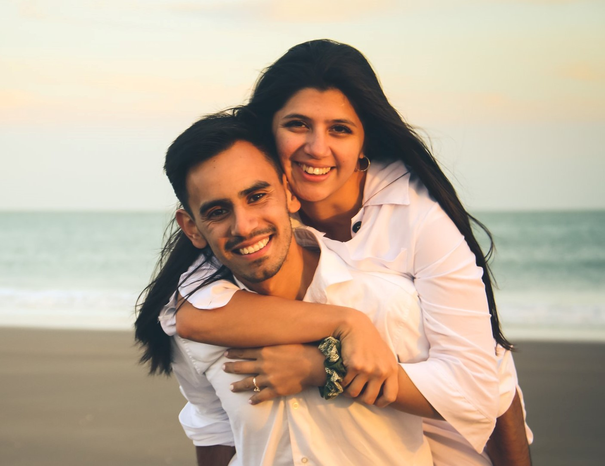

Adriel Romero|WDD 130
Hi!!! My name is Adriel Romero. In the picture you can see me with my wife Giselle the day before we married. We live in Bahía Blanca, Argentina and we have 3 cats, Milo, Almendra and Roma. No kids for now haha.
I work as a cashier in a supermarket but I hope next year introduce to the world of Technology and programming with a job. Thats why I looking for a major in Applied Technology. Since a few year I am learning diferent lanjuages of code and I like very much. Really is the future!
A litte more about me. I play the guitarra and like to play rock and metal songs. Also I love to go to the cinema and wath movies. Also I really enjoy working in my family history and indexing. I try to do it every sunday and some day in the week. Finally I served in the church as ejecuty secretary of stake. It is a beatiful calling and requires a lot of work with stake presidency.